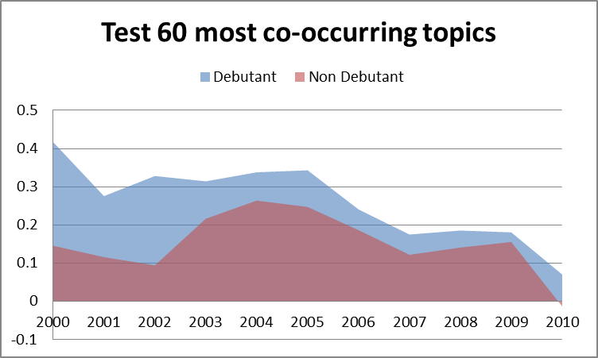

Being aware of new research topics is an important asset for anybody involved in the research environment, including researchers, academic publishers and institutional funding bodies. In recent years, the amount of scholarly data available on the web has increased steadily, allowing the development of several approaches for detecting emerging research topics and assessing their trends. However, current methods focus on the detection of topics which are already associated with a label or a substantial number of documents. In this paper, we address instead the issue of detecting embryonic topics, which do not possess these characteristics yet. We suggest that it is possible to forecast the emergence of novel research topics even at such early stage and demonstrate that the emergence of a new topic can be anticipated by analysing the dynamics of pre-existing topics. We present an approach to evaluate such dynamics and an experiment on a sample of 3 million research papers, which confirms our hypothesis. In particular, we found that the pace of collaboration in sub-graphs of topics that will give rise to novel topics is significantly higher than the one in the control group.
Being aware of new research topics is important for anybody involved in the research environment and, although the effective detection of new research trends is still an open problem, the availability of very large repositories of scholarly data and other relevant sources opens the way to novel data-intensive approaches to address this problem. We can consider two main phases in the early life of a topic. In its initial stage, a group of scientists agree on some basic theories, build a conceptual framework and begin to establish a new scientific community. Afterwards, the new area enters a recognised phase in which a substantial number of authors start working on it, producing and disseminating results. This characterisation is consistent with Kuhn’s vision of scientific revolutions . There are already several approaches capable of detecting novel topics and research trends , which rely on statistical techniques to analyse the impact of either labels or distributions of words associated to topics. However, all these approaches are able to recognise topics only in the two aforementioned phases; that is, when they are already established and associated with a substantial number of publications and when the communities of researchers have already reached a consensus for a label. In this paper, we focus on the earlier embryonic phase, in which the topic itself has not yet been explicitly labelled or identified by a research community. We theorise that it is possible to detect topics at this stage by analysing the dynamics of existent topics. This hypothesis follows from a number of theories which suggest that new topics actually derive from the interactions and cross-pollinations of established research areas. We present a method which integrates statistics and semantics for assessing the dynamics of a topic graph. The method was tested on a sample of 3 million papers and the experiment confirmed our hypothesis. In particular, it was found that the pace of collaboration in graphs of topics that will give rise to a new topic is significantly higher than the one of the control group. This paper is organised as follows. introduces the state of the art. In we describe the experimental approach used to confirm our hypothesis and in we show and discuss the results. We conclude in by discussing the future directions of our research.
Detecting topics and their trends is a task that has recently gained increased interest from the information retrieval community and has been applied to many contexts, such as social networks , blogs , emails and scientific literature .
The state of the art presents several works on research trend detection, which can be characterised either by the way they define a topic or the techniques they use to detect them . Latent Dirichlet Allocation (LDA) is an unsupervised learning method to extract topics from a corpus and models topics as a multinomial distribution over words. Since its introduction, LDA has been extended and adapted in several applications. For example, He et al. combined LDA and citation networks in order to address the problem of topic evolution. Their approach detects topics in independent subsets of a corpus and then leverages citations to connect topics in different time frames. Similarly, Rosen-Zvi et al. and Bolelli et al. extend LDA with the Author-Topic model, in which authors can shape the distribution of topics, and claim that their approach is capable of detecting more new hidden topics than the standard LDA approach. However, these approaches model topics as a distribution over words making difficult to label them, and also the number of topics need to be known a priori.
Morinaga et al. employ the Finite Mixture Model to represent the structure of topics and analyse the changes in time of the extracted components to track emerging topics. This approach was evaluated on an email corpus and therefore is not clear how it could perform on scientific literature, especially when the full text of papers is not available.
Duvvuru et al. analysed networks of co-occurring keywords in scholarly articles and monitored the evolution in time of the link weights for detecting research trends and emerging research areas. However, as pointed out by previous works , keywords tend to be noisy and do not always represent research topics. For example, Osborne et al. show that the use of a semantic characterisation of research topics yields better results for the detection of research communities.
To alleviate this problem, Decker et al. matched a corpus of publications to a taxonomy of topics based on the most significant words found in titles and abstracts, and analysed the changes in the number of publications associated with topics. Similarly, Erten et al. adopted the ACM Digital Library taxonomy for analysing the evolution of topic graphs to monitor research trends. In our experiment we adopted a similar solution and used an ontology of computer science generated and regularly maintained by the Klink-2 algorithm , which has the advantage of being always up to date.
Jo et al. have developed an approach that correlates distributions of terms with the distribution of the citation graph related to publications containing that term. Their work is based on the intuition that if a term is relevant to a particular topic, documents containing that term will have a stronger connection than randomly selected ones. However, this approach is not suitable for emerging topics since it will take time for the citation network of a term to become tightly connected.
To summarise, the state of the art presents several approaches for detecting research trends. However these focus on already recognised topics, associated with a label or, in the case of probabilistic topics models, with a set of terms. Therefore, the problem of detecting research trends in their embryonic phase still needs to be addressed.
In order to confirm the theory that the emergence of a new topic is actually anticipated by the dynamics between already established topics, we designed the following experiment. We selected 50 topics debuting between 2000 and 2010 and extracted the sub-graphs of the n keywords most co-occurring with each topic. We then analysed these graphs in the five years before the topic debut year and compared them to a control group of graphs associated with established topics.
The full list of topics and the results of the experiment can be found at http://technologies.kmi.open.ac.uk/rexplore/www2016/. In the following sections we will describe the dataset, the steps of the process and the metrics used to measure the pace of collaboration of the sub-graphs.
The main input of the experiment are sixteen topic networks, derived from the Rexplore database , representing the co-occurrences of topics in the 1995-2010 timeframe. From a practical perspective, each network can be represented as a fully weighted graph , in which V is the set of keywords while E is the set of links representing co-occurrences between keywords. The node weight is given by the number of publications in which the keyword appears, while the link weight is equal to the number of publications in which two keywords co-occur together in a particular year. However, as pointed out in , the use of keywords as proxies for topics suffers from a number of problems. In fact some keywords tend to be noisy and do not represent topics (e.g., “case study”) while multiple keywords can refer to the same topic (e.g., “ontology mapping” and “ontology matching”). To address this issue, we automatically transformed the graph of keywords into a graph of topics using an ontology of computer science produced by Klink-2 .
Klink-2 is an algorithm which analyses keywords and their relationships with research papers, authors, venues, and organizations and takes advantage of multiple knowledge sources available on the web in order to produce an ontology of research topics linked by three different semantic relationships. It was run on a sample of about 19 million papers, yielding an ontology including about 15000 topics in the field of Computer Science. We converted the keyword network to a topic network by filtering out all the keywords that do not represent topics and by aggregating the keywords representing the same concept. For example, we aggregated keywords such as “semantic web”, “semantic web technology” and “semantic web technologies” in a single node and accordingly recomputed the weights of the network.
From the topic networks we selected two initial groups of topics. The first group, labelled debutant topics was composed by topics that made their debut in the period between 2000 and 2010. The second group, labelled control group or non-debutant group, included topics that made their debut long before the debutant ones (at least in the previous decade) and thus were already established when analysed.
As we will discuss in , we firstly conducted a preliminary evaluation while designing the approach, with the aim of choosing the best combination of technologies for this task. We then evaluated the method on a bigger sample of topics. In the preliminary phase, we focused only on the Semantic Web (debuting in 2001) and Cloud Computing (2006) as debutant topics, because they are well-known research areas and this facilitated the process of validation. For the non-debutant group we selected twenty topics. In the second evaluation, we randomly chose 50 topics for the debutant group and 50 topics for non-debutant group.
The selection phase is the first step of this approach and, as already mentioned, it aims to select and extract portions of the collaboration networks related to topics in the two groups, in a few years prior to the year of analysis.
We hypothesised that after a new topic emerges it will continue to collaborate with the topics that contributed to its creation for a certain time. Hence, for each debuting topic we extracted the portion of topic network containing its n most co-occurring topics and analysed them in the five years preceding its year of debut. In brief, if a topic A makes its debut in 2003, the portion of network containing its most related topics will be analysed in the 1998-2002 time frame, as showed in . We repeated the same procedure on the topics in the control group, assigning them a random year of analysis within the decade 2000-2010. We performed a number of experiments considering different values of n (20, 40, and 60).
At the end of the selection phase we associated to each topic in the two groups a graph :
which corresponded to its collaboration network in the five years prior to its emergence. This graph contained five sub-graphs and each one corresponded to:
in which is the set of most co-occurring topics in a particular year and is the set of edges that link nodes in the set .
In this phase we evaluated the pace of collaboration between topics in the sub-graphs by analysing how the weights associated to nodes and links evolved in time. To this aim we transformed the graphs in sets of 3-cliques. A 3-clique, as shown in , is a complete sub-graph of order three in which all nodes are connected to one another and it is employed to model small groups of entities close to each other .
The intuition is that we can assess the sub-graphs activity by measuring the increase of collaboration in these triangles of topics. In the first instance, we extracted the 3-cliques from the five sub-graphs associated to each topic and created timelines of cliques in subsequent years. In order to measure the amount of collaboration associated to a clique we devised the index showed in , which measures the collaboration of nodes by taking in consideration both node weights and link weights . It does so by computing the conditional probability that a publication associated with a topic x will be also associated with a topic y in a certain year. The advantage of using the conditional probability over the number of co-occurrences is that the resulting value is already normalised according to the dimension of the topics.
This approach computes the weight associated to each link between topic x and y by using the harmonic mean of the conditional probabilities and and then computes the final index as the harmonic mean of all the weights of the clique. We tested other kind of means (e.g., arithmetic mean) in the preliminary evaluation, but the harmonic mean appears to work better, as we will show in , since it rewards cliques in which all the links are associated with high values in both directions.
At this stage, each clique is now reduced to a timeline of measures, as showed in . We then studied the evolution of these values to determine whether the collaboration pace of a clique was increasing or decreasing, as showed in .
We first tried to determine the tendency of a clique by simply taking the difference between the first and the last values of the timeline. However, this method ignores the other values in the timeline and can thus ignore important information. For this reason, we applied the linear interpolation method on the five indexes using the least-squares approximation to determine the linear regression of the time series . The slope α is then used to assess the increase of collaboration in a clique. When α is positive the degree of collaboration between the topics in the clique is increasing over time, while if it is negative the topics are growing more distant. Subsequently, the collaboration pace of each sub-graph was assessed by computing the average and standard deviation of the slopes of the associated cliques.
We will now report the results of the preliminary and full evaluation. The latter was performed on a dataset of 3 million publications including 100 topics initially selected for the analysis (50 debutant topics and 50 topics for the control group), and over 2000 of their co-occurring topics.
In , we discussed two techniques to compute the weight of a clique (i.e., harmonic mean and arithmetic mean) and two methods to evaluate its trend (i.e., computing the difference between the first and the last values and linear interpolation). We tested these four techniques on the graphs composed by the 20 most co-occurring topics per each testing topics. In particular, we evaluated the following approaches:
AM-N, which uses the arithmetic mean and the difference between the two extreme values;
AM-CF, which uses the arithmetic mean and the linear interpolation;
HM-N, which uses the harmonic mean and the difference between the first and the last values;
HM-CF, which uses the harmonic mean and the linear interpolation.
reports the average pace of collaboration for the sub-graphs associated to each testing topics according to these methods (thick horizontal black lines) and the range of their values (thin vertical line). The results confirm the initial hypothesis: according to all these methods the pace of collaboration in the cliques associated with the creation of new topics is positive and higher than the one of the control group. Interestingly, the pace of collaboration of the control group is also slightly positive. Further analysis revealed that this behaviour is probably caused by the fact that in time the topic network becomes denser and noisier.
The techniques based on the simple difference (AM-N and HM-N) exhibit the larger gap between the two groups in terms of average pace of collaboration. However, the ranges of values actually overlap, making it harder to assess if a certain sub-group is incubating a novel topic. The same applies to AM-CF. HM-CF performs better and even if the values slightly overlap when averaging the pace over different years they do not in single years. Indeed, analysing the two ranges separately in 2001 and 2006 (see ), we can see that the overall collaboration paces of the debutant topics (DB) are always significantly higher than the control group (NDB).
We ran the Student’s t-test on the HM-CF approach in order to verify that the two groups, showed in , actually belong to different populations and thus the initial hypothesis is supported by empirical evidence. The test yielded a p-value equal to 7.0280•10-12, which allows us to reject the null hypothesis that the differences between the two distributions are due to random variations.
The results of HM-CF show also interesting insights on the creation of some well-known research topics. and list the cliques which exhibited a higher slope for semantic web and cloud computing. In particular, semantic web was anticipated in the 1996-2001 timeframe by a significant increase in the collaborations of the world wide web area with topics such as information retrieval, artificial intelligence, and knowledge based systems. This is actually consistent with the initial vision of the semantic web, defined in the 2001 by the seminal work of Tim Berners-Lee .
Similarly, cloud computing was anticipated by an increase in the collaboration between topics such as grid computing, web services, distributed computer systems and internet. This suggests that our approach can be used both for forecasting the emergence of new topics in distinct subsections of the topic network and for identifying the topics that give rise to a specific research area.
| Topic 1 | Topic 2 | Topic 3 | Score |
|---|---|---|---|
world wide web | information retrieval | search engines | 2.529 |
world wide web | user interfaces | artificial intelligence | 1.12 |
world wide web | artificial intelligence | knowledge representation | 0.974 |
world wide web | knowledge based systems | artificial intelligence | 0.850 |
world wide web | information retrieval | knowledge representation | 0.803 |
| Topic 1 | Topic 2 | Topic 3 | Score |
|---|---|---|---|
grid computing | distributed computer systems | web services | 1.208 |
web services | information management | information technology | 1.094 |
grid computing | distributed computer systems | quality of service | 1.036 |
internet | quality of service | web services | 0.951 |
web services | distributed computer systems | information management | 0.949 |
The aim of this second evaluation was to further confirm our hypothesis on a bigger sample of topics. In order to do so, we applied the HM-CF approach on 50 debutant topics and compared them to a control group of 50 non-debutant topics. In particular, we performed a number of tests varying the number of co-occurring topics selected per each testing topic.
The charts in reports the results obtained by using 20, 40 and 60 co-occurring topics. Each bar shows the mean value of the average pace of collaboration for the debutant (DB) and non-debutant (NDB) topics. As before, the average pace computed in the portion of topic network related to debutant topics is higher than the one of the control group.
shows the average collaboration pace for each year when considering the 20 most co-occurring topics. The collaboration pace for the debutant topics is higher than the one for the control group with the exception of 2009, when they were almost equal. In addition, in the last five years the overall pace of the non-debutant topics fluctuates, while the overall directions for the debutant topics suffer a significant fall. This can be due to a variety of factors. First, as we mentioned before, the topic network became denser and noisier in recent years. Moreover, the most recent debutant topics often have a yet underdeveloped network of collaborations, which may results in a poor selection of the group of topics to be analysed in the previous years. Therefore, selecting only 20 most co-occurring topics may not allow us to highlight the correct dynamics preceding the topic creation.
Indeed, choosing a higher number of co-occurring topics significantly alleviates this issue. The effect is reduced when selecting 40 of them ( ) and with 60 the collaboration pace of debutant topics is always significantly higher than the one for the control group ( ). However, the fall in the last five years is still present and we thus intend to further investigate this phenomenon in future work.
We ran the Student’s t-test on the groups in different years, in order to confirm that the two distributions belong to different populations. When taking in consideration the 20 most co-occurring topics, the Student t-test yields p = 0.04 in 2009 and p < 1.36•10-20 in other years, whereas, when taking 40 and 60 most co-occurring topics the p-values are all less than 1.28•10-51. As an example, shows the distributions in 2000 and 2001 for the 60 most co-occurring topics.
shows a selection of debutant topics and their collaboration pace versus the collaboration pace of the control group in the same year. We can see a good number of well-known topics that emerged in the last decade and how their appearance was anticipated by the dynamics of the topic network.
In conclusion, the results confirms that the portions of the topic network in which a novel topic will appear exhibit a measurable fingerprint, in terms of increased collaboration pace, well before the topic is recognized and labelled by researchers. These dynamics can be exploited to foster the early detection of emerging research trends.

| Topic | Collaboration Pace | Standard Collaboration pace |
|---|---|---|
service discovery (2000) | 0.4549 | 0.1459 |
ontology engineering (2000) | 0.4350 | 0.1459 |
ontology alignment (2005) | 0.3864 | 0.2473 |
service-oriented architecture (2003) | 0.3598 | 0.2164 |
smart power grids (2005) | 0.3580 | 0.2473 |
sentiment analysis (2005) | 0.3495 | 0.2473 |
semantic web services (2003) | 0.3493 | 0.2164 |
linked data (2004) | 0.3477 | 0.2638 |
wimax (2004) | 0.3470 | 0.2638 |
semantic web technology (2001) | 0.3434 | 0.1160 |
vehicular ad hoc networks (2004) | 0.3421 | 0.2638 |
manet (2001) | 0.3416 | 0.1160 |
p2p network (2002) | 0.3396 | 0.0947 |
location based services (2001) | 0.3308 | 0.1160 |
service oriented computing (2003) | 0.3306 | 0.2164 |
ambient intelligence (2002) | 0.2892 | 0.0947 |
social tagging (2006) | 0.2631 | 0.1865 |
wireless sensor network (2001) | 0.2583 | 0.1160 |
community detection (2006) | 0.2433 | 0.1865 |
cloud computing (2006) | 0.2410 | 0.1865 |
user-generated content (2006) | 0.2404 | 0.1865 |
information retrieval technology (2008) | 0.2315 | 0.1411 |
web 2.0 (2006) | 0.2241 | 0.1865 |
ambient assisted living (2006) | 0.2236 | 0.1865 |
Internet of things (2009) | 0.2214 | 0.1556 |
In this paper, we theorize that it is possible to detect topics in their embryonic stage, i.e., when they have not yet been labelled or associated with a considerable number of publications, by analysing the dynamics between existent topics. We also introduced a method for assessing the increase in the pace of collaboration of topic cliques and used it to confirm our hypothesis by testing it on more than 2000 topics and 3 million research publications. In particular, we selected a number of debuting topics and analysed the behaviour of their most co-occurring topics in the five years before their debut. We found that the pace of collaboration is significantly higher than the one of the control group. We plan to further develop our approach in two main directions. First, we are currently working on a method for the automatic detection of embryonic topics that analyses the topic network and identifies sub-graphs where topics exhibit the discussed dynamics. A second direction of work focuses on improving the current approach by integrating a number of additional dynamics involving other research entities, such as authors and venues. The aim is to produce a robust approach that could be used by researchers and companies alike for gaining a better understanding of where research is heading.
We would like to thank Springer Nature for partially funding this research and Elsevier B.V. for providing us with access to their large repositories of scholarly data.
Kuhn, T.S.: The structure of scientific revolutions. University of Chicago press (2012)
Bolelli, L., Ertekin, Ş., Giles, C.L.: Topic and trend detection in text collections using latent dirichlet allocation. Advances in Information Retrieval, pp. 776-780. Springer (2009)
Duvvuru, A., Kamarthi, S., Sultornsanee, S.: Undercovering research trends: Network analysis of keywords in scholarly articles. Computer Science and Software Engineering (JCSSE), 2012 International Joint Conference on 265-270 (2012)
He, Q., Chen, B., Pei, J., Qiu, B., Mitra, P., Giles, L.: Detecting topic evolution in scientific literature: how can citations help? Proceedings of the 18th ACM conference on Information and knowledge management 957-966 (2009)
Sun, X., Kaur, J., Milojević, S., Flammini, A., Menczer, F.: Social Dynamics of Science. Scientific Reports 3, 1069 (2013)
Becher, T., Trowler, P.: Academic tribes and territories: Intellectual enquiry and the culture of disciplines. McGraw-Hill Education (UK) (2001)
Mathioudakis, M., Koudas, N.: Twittermonitor: trend detection over the twitter stream. Proceedings of the 2010 ACM SIGMOD International Conference on Management of data 1155-1158 (2010)
Gruhl, D., Guha, R., Liben-Nowell, D., Tomkins, A.: Information diffusion through blogspace. Proceedings of the 13th international conference on World Wide Web 491-501 (2004)
Morinaga, S., Yamanishi, K.: Tracking dynamics of topic trends using a finite mixture model. Proceedings of the tenth ACM SIGKDD international conference on Knowledge discovery and data mining 811-816 (2004)
Tseng, Y.-H., Lin, Y.-I., Lee, Y.-Y., Hung, W.-C., Lee, C.-H.: A comparison of methods for detecting hot topics. Scientometrics 81, 73-90 (2009)
Decker, S.L., Aleman-Meza, B., Cameron, D., Arpinar, I.B.: Detection of bursty and emerging trends towards identification of researchers at the early stage of trends. University of Georgia (2007)
Erten, C., Harding, P.J., Kobourov, S.G., Wampler, K., Yee, G.: Exploring the computing literature using temporal graph visualization. Electronic Imaging 2004 45-56 (2004)
Lv, P.H., Wang, G.-F., Wan, Y., Liu, J., Liu, Q., Ma, F.-c.: Bibliometric trend analysis on global graphene research. Scientometrics 88, 399-419 (2011)
Salatino, A.: Early Detection and Forecasting of Research Trends. (2015)
Blei, D.M., Ng, A.Y., Jordan, M.I.: Latent dirichlet allocation. J. Mach. Learn. Res. 3, 993-1022 (2003)
Rosen-Zvi, M., Griffiths, T., Steyvers, M., Smyth, P.: The author-topic model for authors and documents. Proceedings of the 20th conference on Uncertainty in artificial intelligence 487-494 (2004)
Duvvuru, A., Radhakrishnan, S., More, D., Kamarthi, S., Sultornsanee, S.: Analyzing Structural & Temporal Characteristics of Keyword System in Academic Research Articles. Procedia Computer Science 20, 439-445 (2013)
Osborne, F., Motta, E.: Mining semantic relations between research areas. The Semantic Web–ISWC 2012, pp. 410-426. Springer (2012)
Osborne, F., Motta, E.: Klink-2: integrating multiple web sources to generate semantic topic networks. The Semantic Web–ISWC 2015, pp. 408-424. Springer (2015)
Jo, Y., Lagoze, C., Giles, C.L.: Detecting research topics via the correlation between graphs and texts. Proceedings of the 13th ACM SIGKDD international conference on Knowledge discovery and data mining 370-379 (2007)
Osborne, F., Motta, E., Mulholland, P.: Exploring scholarly data with rexplore. The Semantic Web–ISWC 2013, pp. 460-477. Springer (2013)
Luce, R.D., Perry, A.D.: A method of matrix analysis of group structure. Psychometrika 14, 95-116 (1949)
Berners-Lee, T., Hendler, J., Lassila, O.: The semantic web. Scientific american 284, 28-37 (2001)
Osborne, F., Scavo, G., Motta, E.: A hybrid semantic approach to building dynamic maps of research communities. Knowledge Engineering and Knowledge Management, pp. 356-372. Springer (2014)